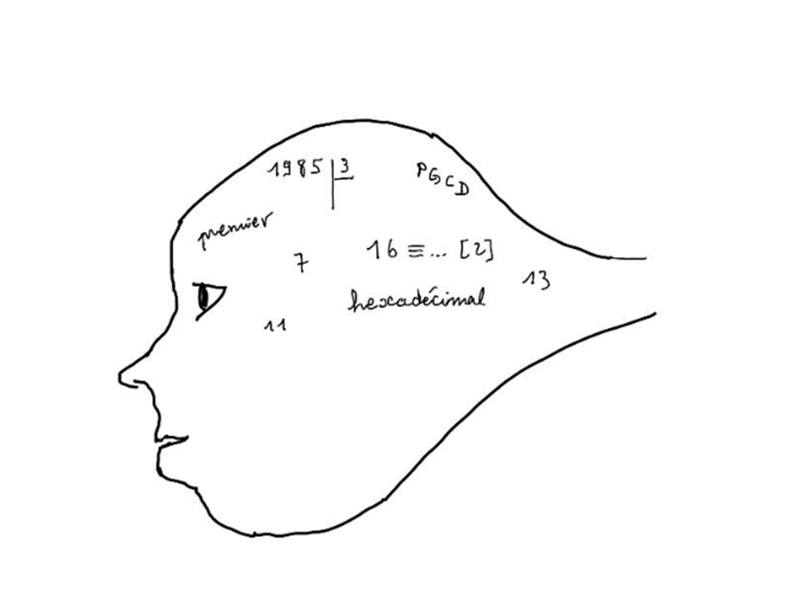
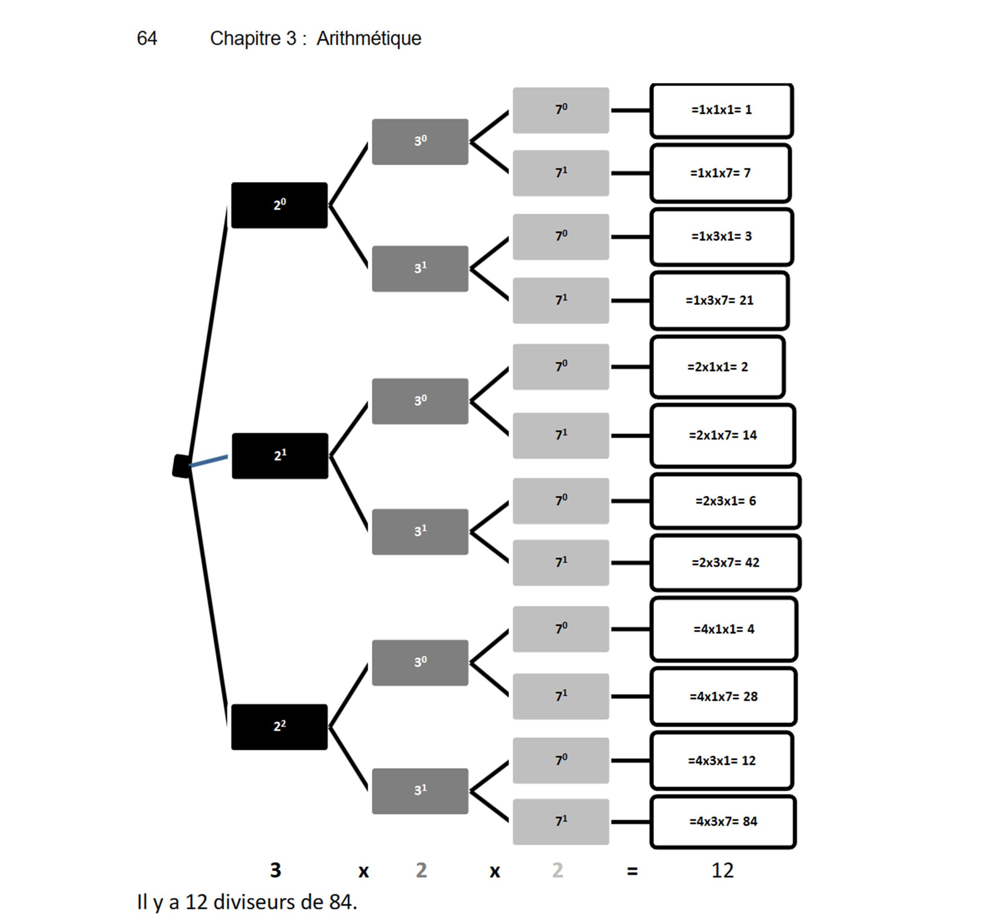

Chapitre 3 — Arithmétique
A. Numération et changements de base

Notation des nombres selon leur base : \((\text{Nombre})_{\text{Base}}\) ou \(\text{Nombre}_{(\text{Base})}\).
I. Bases 10, 2 et 16
Dans cette partie, nous convertirons tous les nombres dans le système décimal.
1) Rappel sur notre système décimal
Le système décimal est un système en base 10. Il comporte 10 chiffres et la position de chaque chiffre d’un nombre en base 10 correspond à une puissance de 10.
2) Le système binaire
Le système binaire est un système en base 2. Tout comme le système décimal, la position de chaque chiffre du nombre correspond à une puissance de 2. Il comporte uniquement les chiffres 0 et 1.
3) Le système hexadécimal
Le système hexadécimal est un système en base 16. Tout comme le système décimal, la position de chaque chiffre du nombre correspond à une puissance de 16. Il comporte 16 chiffres : les 10 chiffres de 0 à 9 et les lettres A, B, C, D, E et F. A correspond à la valeur décimale de 10, B à 11 jusqu’à F qui correspond à 15.
Exercice 24
Convertir en base 10 les nombres suivants :
II. Conversions entre bases
| VersBase 10 (décimal) | VersBase 2 (binaire) | VersBase 16 (hexadécimal) | |
|---|---|---|---|
| DeBase 10 (décimal) | Même base | Division euclidienneDivisions successives par 2. Noter les restes. | Division euclidienneDivisions successives par 16. Noter les restes. |
| DeBase 2 (binaire) | Puissances de 2\(\sum d_i \times 2^i\) | Même base | RegroupementDes bits par 4. Lire dans la table. |
| DeBase 16 (hexadécimal) | Puissances de 16\(\sum h_i \times 16^i\) | Éclatement en bitsChaque chiffre hexadécimal converti sur 4 bits binaires. | Même base |
1) Encore avec un rappel du système décimal. En effectuant des divisions euclidiennes successives par 10 d’un nombre en base 10, on retrouve l’écriture de ce dernier en relevant les restes des divisions dans l’ordre inverse de leur apparition.
2) Du décimal vers le binaire. En se basant sur le rappel précédent, pour convertir un nombre décimal en base 2, on effectue des divisions euclidiennes successives par 2 du nombre en base 10 et on obtient son écriture en base 2 en relevant les restes des divisions dans l’ordre inverse de leur apparition.
Convertir (11)₁₀ en base 2
3) Du décimal vers l’hexadécimal. Tout comme pour la conversion de la base 10 à la base 2, on effectue des divisions euclidiennes successives par 16 du nombre en base 10 et on obtient son écriture en base 16 en relevant les restes des divisions dans l’ordre inverse de leur apparition. Ne pas oublier de remplacer les restes supérieurs à 9 par leur lettre correspondante.
Convertir (45 582)₁₀ en base 16
Exercice 25
1) a) Convertir (541)₁₀ dans le système binaire. b) Convertir (541)₁₀ dans le système hexadécimal. 2) Reprendre les questions du 1) avec le nombre suivant : (1024)₁₀.
4) Du binaire vers l’hexadécimal. Pour convertir un nombre du système binaire vers le système hexadécimal, il faut tout d’abord regrouper les chiffres par 4, en partant de l’extrême droite du nombre. Chaque regroupement représente un nombre en base 10 entre 0 et 15.
Convertir (101110100101)₂ en base 16
5) De l’hexadécimal vers le binaire. On convertit chaque chiffre du nombre en base 16, en base 10 puis en système binaire, obligatoirement à l’aide de 4 chiffres.
Convertir (3EC)₁₆ en base 2
Exercice 26
III. Opérations
1) L’addition — a) Dans le système binaire. Les règles de base :
On peut, à chaque moment, vérifier la cohérence d’un résultat en convertissant dans le système décimal. Conséquence des deux derniers cas : quand on pose une addition dans le système binaire, il y a une retenue de « 1 ». Dans le dernier cas, une retenue de « 0 » se fera sur le rang suivant, puis une retenue de « 1 » sur celui qui suit le rang suivant.
Calculer (1111)₂ + (0101)₂
Calculer (1101)₂ + (0111)₂ + (0101)₂
Exercice 27
1) Poser et calculer dans le système binaire, puis vérifier dans le système décimal :
b) Dans le système hexadécimal. Les retenues se font dès que l’on atteint le nombre 16 dans le calcul ; le reste est un nombre entre 0 et 15.
Addition hexadécimale
Exercice 28
1) Poser et calculer, dans le système hexadécimal :
2) Vérifier, dans le système décimal, la cohérence du résultat de la question précédente.
2) La multiplication — a) Dans le système binaire. Les règles de base :
Pour poser une multiplication dans le système binaire, comme dans n’importe quel système, il est conseillé de poser en deuxième nombre celui qui a le moins de chiffres, sinon le plus petit des deux nombres.
Multiplication binaire
Exercice 29
1) Poser et calculer, dans le système binaire, puis vérifier dans le système décimal :
b) Dans le système hexadécimal. Selon l’opération, on peut d’abord convertir en binaire pour effectuer le calcul, puis convertir le résultat en hexadécimal. La vérification de cet exemple se fait dans le système décimal.
Multiplication hexadécimale
Exercice 30
Poser et calculer dans le système hexadécimal l’opération suivante :
IV. Conversion avec une partie décimale non nulle
1) Le système binaire et la numération décimale — a) Du système binaire au décimal. Comme pour la partie entière, chaque position du chiffre qui suit la virgule correspond à une puissance de 2 ; à partir de la virgule, les exposants sont négatifs.
Convertir (110,11)₂ en base 10
b) Du système décimal au binaire. Pour passer d’un nombre entier en base 10 à la base 2, on réalise des divisions euclidiennes successives jusqu’à obtenir un diviseur égal à 0, puis on relève la valeur des restes dans l’ordre inverse de leur apparition. Pour convertir la partie décimale, on multiplie successivement par 2 la partie décimale jusqu’à obtenir le chiffre 1 (qui n’est pas obligatoirement obtenu et la partie après la virgule pourra donc être infinie), puis on relève les parties entières dans l’ordre d’apparition.
Convertir (3,125)₁₀ en binaire
c) Les arrondis. En cas de partie décimale à arrondir à un nombre de bits indiqué, cela dépendra du bit suivant : si c’est 0, on garde la valeur par défaut du bit demandé ; si c’est 1, on ajoute 1 au bit demandé.
Arrondir (6,43)₁₀ à 2 bits
Arrondir (5,14)₁₀ à 1 bit
Exercice 31
2) Le système hexadécimal et la numération décimale — a) Du système hexadécimal au décimal. À partir de la virgule, les puissances de 16 ont des exposants négatifs.
Convertir (A,B)₁₆ en base 10
b) Du système décimal à l’hexadécimal. Pour convertir la partie décimale, on multiplie successivement par 16 jusqu’à obtenir un nombre entier non nul (ou jusqu’à la précision demandée), puis on relève les parties entières dans l’ordre d’apparition.
Convertir (328,609375)₁₀ en hexadécimal
Exercice 32
3) Le système hexadécimal et le système binaire — a) Du système hexadécimal vers le système binaire. Pour la partie entière, on convertit chaque symbole en base 16 en base 10, puis en système binaire obligatoirement à l’aide de 4 bits. Pour la partie décimale, on procède exactement de la même façon.
Convertir (2A,4D)₁₆ dans le système binaire
b) Du système binaire vers le système hexadécimal. On regroupe les bits par 4 à partir de la virgule ; pour la partie décimale, le regroupement se fait vers la droite en ajoutant si besoin des « 0 » à l’extrême droite.
Convertir (1011011,001011)₂ dans le système hexadécimal
Exercice 33
B. Arithmétique modulaire
I. Division euclidienne
1) La division euclidienne dans \(\mathbb N\) (rappel). Diviseur, quotient et reste sont des entiers naturels, et le diviseur est un entier naturel non nul.
Division euclidienne dans ℕ
Soient \(m\) le dividende, \(n\) le diviseur, \(p\) le quotient et \(r\) le reste. Si \(r=0\), on dit que \(n\) divise \(m\), que \(n\) et \(p\) sont des diviseurs de \(m\), et que \(m\) est un multiple de \(n\).
Tester une division euclidienne
La première égalité correspond à une division euclidienne lorsque 13 est le diviseur ; elle ne convient pas avec 7 comme diviseur. La seconde égalité ne correspond pas à une division euclidienne.
Pour une division euclidienne, cette écriture est unique.
2) Division euclidienne dans \(\mathbb Z\). Soient \(m\) le dividende, \(n\) le diviseur, \(p\) le quotient et \(r\) le reste, avec \(m,p\in\mathbb Z\), \(r\in\mathbb N\) et \(n\in\mathbb Z^*\).
Rappel : avec \(a\in\mathbb R\), \(|a|\) est appelée « valeur absolue de \(a\) ».
Exemples de divisions euclidiennes dans \(\mathbb Z\) (le reste doit toujours être positif et plus petit que la valeur absolue du diviseur) :
Exercice 34
Poser les divisions euclidiennes suivantes et écrire les égalités correspondantes :
II. Nombres premiers
Dans ce chapitre, on travaille uniquement dans l’ensemble des entiers naturels : \(\mathbb N\). Un nombre entier qui a exactement 2 diviseurs est un nombre premier. Les cinq premiers nombres premiers sont donc :
Pour savoir si un entier \(n\) est premier, calculer \(\sqrt n\), puis vérifier si \(n\) est divisible par un des nombres premiers inférieurs ou égaux à \(\sqrt n\).
2022 est-il premier ?
Les critères de divisibilité suffisent à affirmer que 2022 est divisible par 2 (et par 3 aussi) ; 2022 n’est donc pas premier.
2023 est-il premier ?
Il faut donc tester si 2 023 est divisible par un des nombres premiers jusqu’à 44 (soit 43) si nécessaire. Donc 2 023 n’est pas un nombre premier.
Exercice 35
1) Donner les 15 premiers nombres premiers. 2) Est-ce que 2 867 est un nombre premier ?
3) Décomposition d’un nombre entier en produit de facteurs premiers. But : écrire tout nombre entier à l’aide d’un produit uniquement composé de puissances de nombres premiers. Méthode : établir la liste des diviseurs « premiers » du nombre à décomposer, en les testant dans l’ordre croissant.
| Nombres à diviser | Diviseurs |
|---|---|
| 210 | 2 |
| 105 | 3 |
| 35 | 5 |
| 7 | 7 |
| 1 |
| Nombres à diviser | Diviseurs |
|---|---|
| 2 023 | 7 |
| 289 | 17 |
| 17 | 17 |
| 1 |
Exercice 36
Décomposer les nombres suivants en produit de facteurs premiers :
4) Déterminer la liste de tous les diviseurs d’un nombre entier. Méthode : décomposer le nombre entier concerné en produit de facteurs premiers ; construire une arborescence avec toutes les puissances des nombres premiers trouvés (en commençant par l’exposant zéro) ; le nombre de diviseurs sera le nombre de branches de la dernière étape ; la valeur des diviseurs correspond au produit effectué avec tous les nombres le long de chaque branche.
Donner tous les diviseurs de 84

| Puissances choisies | Diviseur |
|---|---|
| 1 × 1 × 1 | 1 |
| 1 × 1 × 7 | 7 |
| 1 × 3 × 1 | 3 |
| 1 × 3 × 7 | 21 |
| 2 × 1 × 1 | 2 |
| 2 × 1 × 7 | 14 |
| 2 × 3 × 1 | 6 |
| 2 × 3 × 7 | 42 |
| 4 × 1 × 1 | 4 |
| 4 × 1 × 7 | 28 |
| 4 × 3 × 1 | 12 |
| 4 × 3 × 7 | 84 |
Il y a 12 diviseurs de 84.
Exercice 37
1) Donner le nombre de diviseurs du nombre 5 733. 2) Quels sont tous les diviseurs de 5 733 ?
III. PGCD et nombres premiers entre eux
1) Le PGCD de deux nombres entiers. Soient \(m,n\in\mathbb N^*\). On note \(\operatorname{PGCD}(m;n)\) ou \(\operatorname{PGCD}(n;m)\) le plus grand diviseur commun des deux nombres \(m\) et \(n\).
a) La décomposition en facteurs premiers. Le PGCD est le produit de chaque facteur commun, en considérant l’exposant le plus petit.
Déterminer PGCD (306 ; 756)
Exercice 38
Déterminer le PGCD (2 205 ; 1 890).
b) L’algorithme des différences. Soient \(m\) et \(n\) deux entiers naturels non nuls, tels que \(m>n\). L’algorithme des différences utilise la propriété suivante et on l’applique jusqu’à obtenir le PGCD de deux mêmes nombres :
Déterminer le PGCD (24 ; 18)
Exercice 39
Déterminer le PGCD de 210 et 231 par l’algorithme des différences.
c) L’algorithme d’Euclide. Soient \(m\) et \(n\) deux entiers naturels non nuls, tels que \(m>n\). Effectuer la division euclidienne de \(m\) par \(n\), puis les divisions successives du diviseur par le reste, jusqu’à obtenir un reste nul. Le PGCD des nombres initiaux est alors le dernier diviseur de l’algorithme.
Déterminer le PGCD de 225 et 115
Exercice 40
Déterminer le PGCD de 444 et 120 par l’algorithme d’Euclide.
2) Nombres premiers entre eux. Deux nombres sont premiers entre eux si, et seulement si, leur plus grand diviseur commun est 1.
Exercice 41
Déterminer si les nombres suivants sont premiers entre eux : 1) 374 et 75 ; 2) 111 et 297.
IV. Congruence
1) Définition 1. Soient \((a;b)\in\mathbb Z^2\) et \(p\in\mathbb N^*\). On dit que \(a\) est congru à \(b\) modulo \(p\) si, et seulement si, \(a-b\) est un multiple de \(p\).
2) Définition 2. Soient \((a;b)\in\mathbb Z^2\) et \(p\in\mathbb N^*\). On dit que \(a\) est congru à \(b\) modulo \(p\) si, et seulement si, \(b\) est le reste de la division euclidienne de \(a\) par \(p\). Cette définition est la plus intéressante surtout pour le cryptage et le décryptage.
3) Propriétés. Soient \(m,n,m',n'\in\mathbb Z\) et \(p\in\mathbb N^*\).
a) Addition de congruences
b) Opposé et différence
c) Produit par un entier
d) Produit de congruences
e) Puissances
f) Division
Il n’existe aucune propriété avec la division.
En effet, 3 − 1 = 2 et 2 n’est pas un multiple de 10.
Exercice 42
Compléter les congruences suivantes :
Exercice 43
Démontrer que :
Exercice 44
Déterminer le reste de la division euclidienne de :
Exercice 45 — Sujet BTS SIO septembre 2020
En informatique, le code ASCII associe à certains caractères (lettre, chiffre, signe de ponctuation, …) un entier compris entre 0 et 255 que l’on appelle son code ASCII. La fonction CODE du tableur renvoie le code ASCII du caractère. L’extrait de tableur ci-dessous donne le codage de quelques caractères.
| Lettre | A | B | C | D | E | F | G | H | I | J | K | L | M |
|---|---|---|---|---|---|---|---|---|---|---|---|---|---|
| Code ASCII : n | 65 | 66 | 67 | 68 | 69 | 70 | 71 | 72 | 73 | 74 | 75 | 76 | 77 |
| p = f(n) | 199 | 206 |
| Lettre | N | O | P | Q | R | S | T | U | V | W | X | Y | Z |
|---|---|---|---|---|---|---|---|---|---|---|---|---|---|
| Code ASCII : n | 78 | 79 | 80 | 81 | 82 | 83 | 84 | 85 | 86 | 87 | 88 | 89 | 90 |
| p = f(n) |
On décide de chiffrer (crypter) une lettre à partir de son code ASCII en utilisant la fonction f définie pour tout entier n tel que 0 ≤ n < 256 par f(n) est le reste de la division euclidienne de 7n par 256. Si on note p = f(n), alors p ≡ 7n (mod 256), avec p entier tel que 0 ≤ p < 256. Par exemple, le code ASCII de la lettre A est 65. On a 7 × 65 ≡ 199 (mod 256) et 0 ≤ 199 < 256, donc la lettre A est chiffrée par 199.
Partie A — Chiffrement : 1. Vérifier que la lettre « B » est chiffrée par le nombre 206. 2. Déterminer le cryptage du mot « BTS » (on séparera chaque code de lettre par un espace).
Partie B — Déchiffrement. Pour déchiffrer un entier p compris entre 0 et 255 (inclus), on calcule le reste de la division euclidienne de 183 × p par 256 ; autrement dit, n ≡ 183p (mod 256), avec n entier tel que 0 ≤ n < 256. Par exemple, pour p = 20, on a 183 × 20 ≡ 76 (mod 256) et donc la valeur chiffrée correspond à la lettre L.
1. Déterminer la lettre correspondant à la valeur chiffrée 27. On détaillera la réponse. 2. Donner le mot de trois lettres correspondant au code chiffré des trois entiers : 234, 255, 34.
Partie C — Justification : 1. Prouver que 183 × 7 ≡ 1 (mod 256). 2. On souhaite justifier comment obtenir l’entier n à partir de l’entier p = f(n). On rappelle que f(n) ≡ 7n (mod 256). En déduire que 183 × f(n) ≡ n (mod 256).